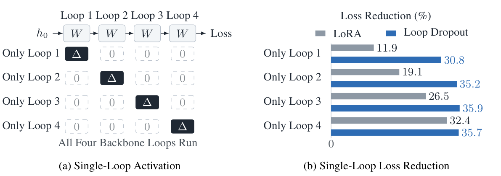

Loop Dropout: Regularizing Shared Updates in Looped Language Models
ARXIV · PREPRINT · 2026 · arXiv:2609.34218 · Preprint first submitted 2026/09/28
Abstract
Looped language models separate computational depth from parameter count by repeatedly applying the same transformer block. Adapting these models requires a shared update that remains effective as hidden states evolve throughout the recurrent computation. Our empirical analysis reveals a pronounced late-loop bias in standard low-rank adaptation (LoRA): the shared update provides limited adaptation at early loop positions. This imbalance motivates training shared updates under varying combinations of their applications. Randomly omitting adapter applications alone, however, does not improve task performance; it reduces expected update strength during training while leaving inference unchanged. We introduce Loop Dropout, which couples stochastic masking of adapter applications with inverse-survival rescaling to preserve expected update strength and promote effective adaptation across loops. Extensive experiments demonstrate improved mathematical reasoning across model sizes, adapter ranks and training recipes, with benefits extending to general instruction tuning and code generation. Loop Dropout outperforms existing LoRA variants and adapter regularizers, while further analysis shows stronger early-loop adaptation. Every backbone loop remains active, and inference applies the adapter at all loops using standard LoRA without additional trainable parameters or inference computation. Code is available at https://github.com/NUS-HPC-AI-Lab/loop-dropout .
Overview
Stochastic masking with inverse-survival rescaling improves shared LoRA adaptation across loops, supporting mathematical reasoning, instruction tuning, and code generation.

No additional trainable parameters or inference computation
Citation
Zirui Zhu; Hailun Xu; Xuanlei Zhao; Yong Liu; Yingxuan Ren; Kanchan Sarkar; Kun Xu; Yang You. (2026). Loop Dropout: Regularizing Shared Updates in Looped Language Models. arXiv preprint 2609.34218. https://arxiv.org/abs/2609.34218
BibTeX for the arXiv version:
@misc{loopdropout2026,
title = {Loop Dropout: Regularizing Shared Updates in Looped Language Models},
author = {Zhu, Zirui and Xu, Hailun and Zhao, Xuanlei and Liu, Yong and Ren, Yingxuan and Sarkar, Kanchan and Xu, Kun and You, Yang},
year = {2026},
url = {https://arxiv.org/abs/2609.34218},
eprint = {2609.34218},
archivePrefix = {arXiv}
}